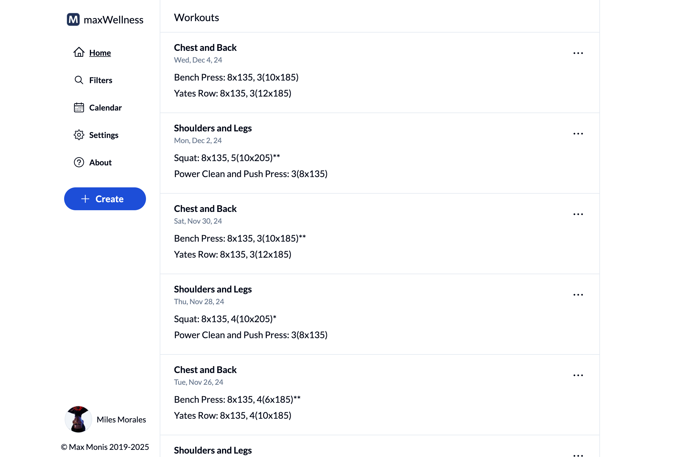
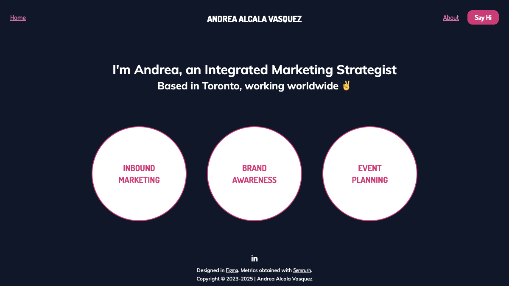

My name is Max
My world is code
Portfolio
I build websites in my spare time for fun and to try out new tools and techniques. Many of the repos on my Github are public, and the following sites are currently deployed:
-
goat-vote.com

This passion project consumes most of my mornings, evenings, and weekends. Its users vote on which athletes are the best of all time and of the current year, and it relies on the Next App Router, TypeScript, Tailwind, i18next, Nodemailer, MongoDB, Mongoose, the Sports Reference API, and the Wikimedia API. As are all my apps, it's totally free. Try it out!
-
max-wellness.ca
The stack of this workout tracker includes Next, TypeScript, Tailwind, React Query, and Firebase. At launch every page had a perfect score on Lighthouse, including PWA. Building the original MERN version was the main way I taught myself to code.
-
margaretmonis.com
My mom's blog, which I created for her using the Next App Router, Typescript, Tailwind, GraphQL, DatoCMS, Nodemailer, and Firebase.
Previous Projects
-

goatvote.ca is a MERN (MongoDB, Express, React, Node) version of GoatVote which uses TypeScript, MUI, React Router, React Query, i18next, the Wikimedia API, Mongoose, and Firebase Authentication.
-

alcalandrea.com is my girlfriend's portfolio, which she designed and I built using the Next App Router, TypeScript, Tailwind, GraphQL, and DatoCMS.
-
code-repo.vercel.app is a social media site for sharing solutions to programming challenges and its stack includes Next, Firebase, and Emotion.
Additional Repos
-
AuthApp is an Express server with a React frontend which has 100% test coverage using React Testing Library and Jest, with Mock Service Worker for HTTP mocking. I also recreated the application with Angular, and then again using Vite Vanilla TypeScript.
-
The website you're viewing right now is hosted on Github Pages. It uses only HTML, CSS, and JavaScript and its repo is open source, as is that of the original Gatsby version.
About Me